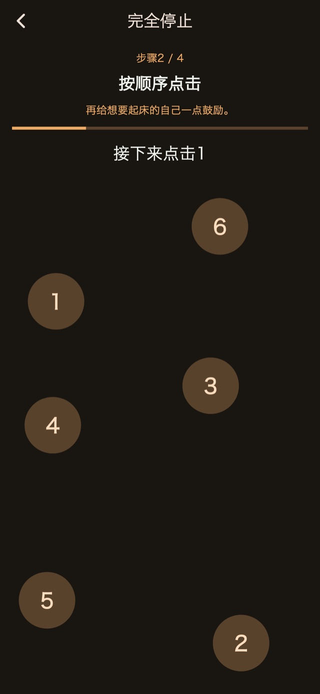
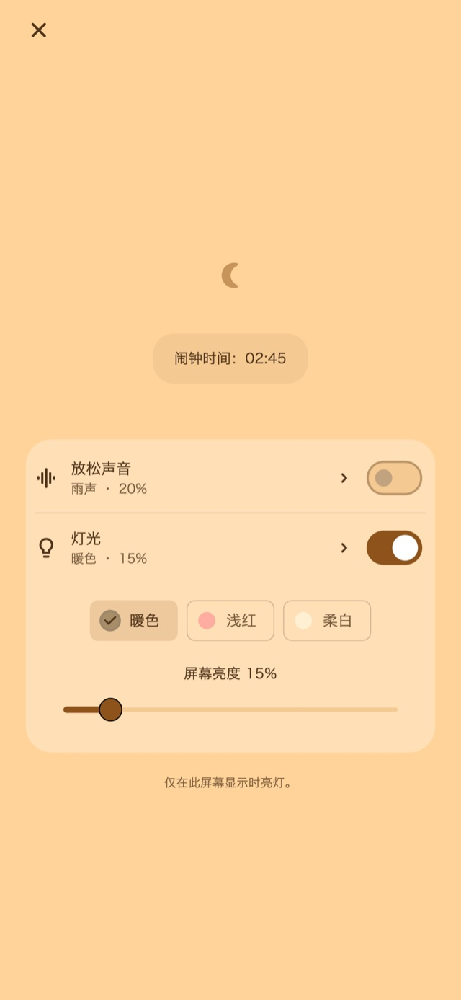

放松声音
休息时可聆听雨声、海浪或白噪音。 声音只在你主动开启后播放，并在第一次闹钟前逐渐减弱、停止。
01振动模式
长度和节奏不断变化，带来不同于日常通知的振动。让这种“不太一样”的感觉，成为醒来的契机。
短振、长振、连续振动。可以选择随机、通知风格、以长振为主、以短振为主四种基本模式。通过时长和间隔的变化带来不同节奏，设置前也能先试一试。
振动模式
02多次提醒
无需逐个建立闹钟。 可以只停止本次提醒并保留后续提醒，也可以结束整组，取消剩余预约。
保存次数和间隔需要高级版。
多次提醒
起身后结束
03停止操作
计算、按顺序点击数字、长按、连续点击等操作，让停止和稍后提醒需要主动完成步骤。 标准停止和稍后提醒流程已包含在内；修改与组合步骤需使用高级版。

夜间界面
设置后可打开夜间画面等待，调整屏幕亮度和时钟显示。也可以在一段时间未操作后隐藏画面，轻点即可重新显示时钟和控制项。
选择例如30分钟的时长，或指定起床时间。
保持夜间画面打开，按需开启音效或灯光。
起身后完成停止步骤，并结束剩余提醒。
放松音效与可调灯光
小睡或哄孩子入睡时，可按需从夜间画面开启。
休息时可聆听雨声、海浪或白噪音。 声音只在你主动开启后播放，并在第一次闹钟前逐渐减弱、停止。
灯光可选暖色、淡红色、柔和白色，亮度可按当时的环境调整。
基本功能免费

免费 / 高级版
四种基本振动、标准停止与稍后提醒、夜间画面、放松音效和灯光均可使用。 部分画面会显示广告。
| 功能 | 免费 | 高级版 |
|---|---|---|
| 振动模式 | ✓ | ✓ |
| 多次提醒 | 标准设置 | 可自定义 |
| 停止操作 | 标准设置 | 可自定义 |
| 夜间界面 / 放松声音 / 灯光 | ✓ | ✓ |
| 创建和编辑自己的振动节奏。 | — | ✓ |
| 移除全部广告。 | — | ✓ |
可以选择月度方案或一次性购买。月度方案会自动续订，可在商店账户设置中管理或取消。购买前请查看购买页面上的价格与条件。
常见问题
要使用应用自定义的振动节奏，请在设置闹钟后保持夜间画面打开。按侧边按钮锁屏或切换到其他应用后，振动将由iOS控制，所选的自定义节奏和强度不会生效。使用前请检查权限与设备振动设置，并进行运行测试。
休息时可聆听雨声、海浪或白噪音。声音只在你主动开启后播放，并在第一次闹钟前逐渐减弱、停止。 灯光可选暖色、淡红色、柔和白色，亮度可按当时的环境调整。
四种基本振动、标准停止与稍后提醒、夜间画面、放松音效和灯光均可使用。 部分画面会显示广告。 移除全部广告。 调整提醒次数与间隔。 编辑停止与稍后提醒的操作步骤。 创建和编辑自己的振动节奏。 可以选择月度方案或一次性购买。月度方案会自动续订，可在商店账户设置中管理或取消。购买前请查看购买页面上的价格与条件。
下载
适合小睡与哄睡的振动闹钟
基本功能免费
iPhone: iOS 26.1+ / Android: 8.0+